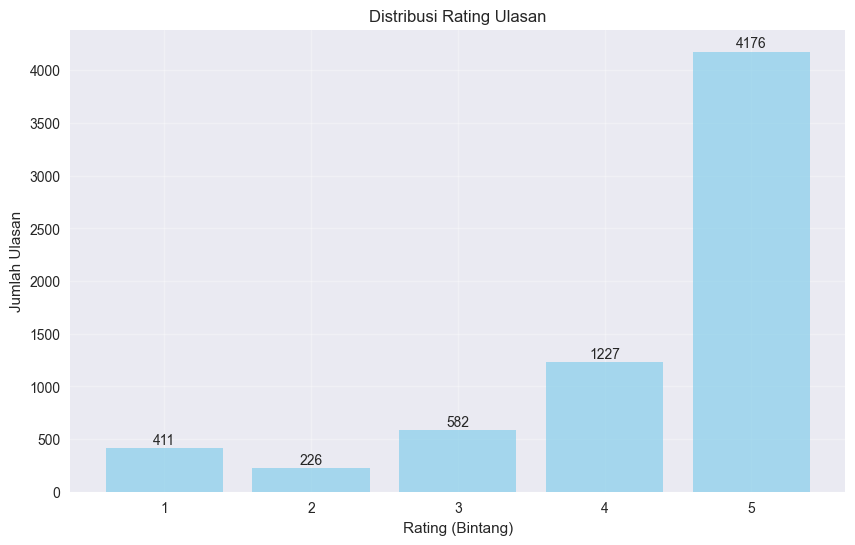
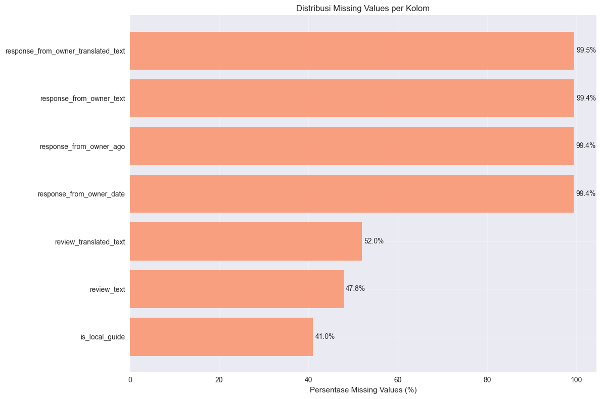
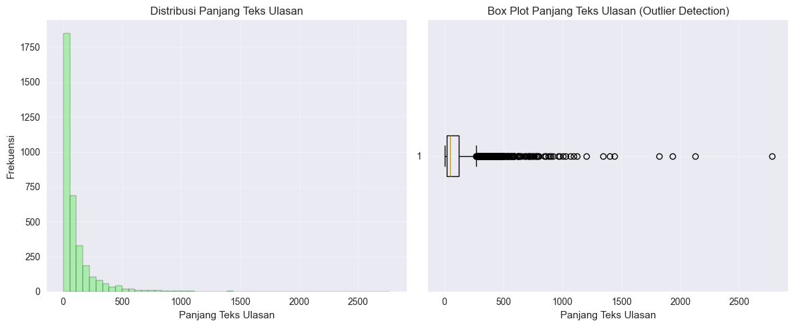
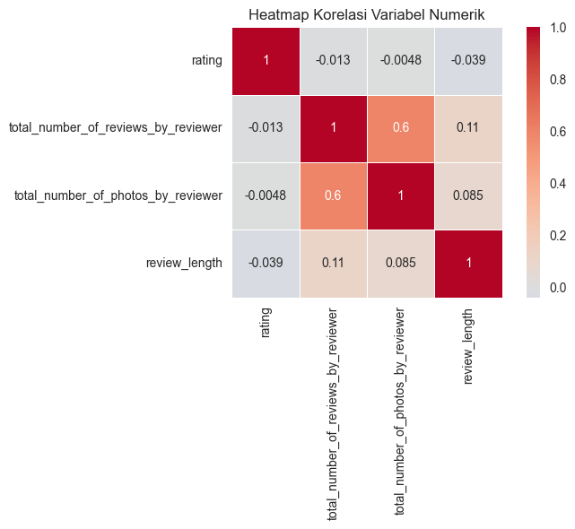

Data Understanding#
import pandas as pd
import numpy as np
import matplotlib.pyplot as plt
import seaborn as sns
from scipy import stats
import warnings
warnings.filterwarnings('ignore')
# Set style untuk visualisasi
plt.style.use('seaborn-v0_8')
sns.set_palette("husl")
2.1. Data Collection#
The analysis utilizes four main datasets:
Detailed Reviews: 6,622 rows × 21 columns
Featured Reviews: 512 rows × 21 columns
Overview: 96 rows × 22 columns
All Data: 96 rows × 43 columns
Primary Dataset: Detailed Reviews (6,622 rows, 21 columns)
# Load dataset utama
df_detailed = pd.read_csv('Assets/data/csv/all-task-3-detailed-reviews.csv')
df_featured = pd.read_csv('Assets/data/csv/all-task-3-featured-reviews.csv')
df_overview = pd.read_csv('Assets/data/csv/all-task-3-overview.csv')
df_all = pd.read_csv('Assets/data/csv/all-task-3.csv')
print(f"Dataset loaded:")
print(f" - Detailed Reviews: {df_detailed.shape}")
print(f" - Featured Reviews: {df_featured.shape}")
print(f" - Overview: {df_overview.shape}")
print(f" - All Data: {df_all.shape}")
Dataset loaded:
- Detailed Reviews: (6622, 21)
- Featured Reviews: (512, 21)
- Overview: (96, 22)
- All Data: (96, 43)
df = df_detailed.copy()
print(f"Menggunakan dataset utama: Detailed Reviews ({df.shape[0]} rows, {df.shape[1]} columns)")
Menggunakan dataset utama: Detailed Reviews (6622 rows, 21 columns)
2.2. Data Description#
2.2.1. Basic Information#
Dataset Overview:
Total Records: 6,622
Total Features: 21
Memory Usage: 9.87 MB
Data Structure:
17 object type columns
3 integer type columns
1 float type column
df.info()
<class 'pandas.core.frame.DataFrame'>
RangeIndex: 6622 entries, 0 to 6621
Data columns (total 21 columns):
# Column Non-Null Count Dtype
--- ------ -------------- -----
0 place_id 6622 non-null object
1 place_name 6622 non-null object
2 review_id 6622 non-null object
3 review_link 6622 non-null object
4 name 6622 non-null object
5 reviewer_id 6622 non-null object
6 reviewer_profile 6622 non-null object
7 rating 6622 non-null int64
8 review_text 3455 non-null object
9 published_at 6622 non-null object
10 published_at_date 6622 non-null object
11 response_from_owner_text 37 non-null object
12 response_from_owner_ago 39 non-null object
13 response_from_owner_date 39 non-null object
14 total_number_of_reviews_by_reviewer 6622 non-null int64
15 total_number_of_photos_by_reviewer 6622 non-null int64
16 is_local_guide 3908 non-null float64
17 review_translated_text 3181 non-null object
18 response_from_owner_translated_text 33 non-null object
19 experience_details 6622 non-null object
20 review_photos 6622 non-null object
dtypes: float64(1), int64(3), object(17)
memory usage: 1.1+ MB
print(f"Total Records: {df.shape[0]:,}")
print(f"Total Features: {df.shape[1]}")
print(f"Memory Usage: {df.memory_usage(deep=True).sum() / 1024**2:.2f} MB")
Total Records: 6,622
Total Features: 21
Memory Usage: 9.87 MB
2.2.2. Data Types Overview#
The dataset contains a mix of data types:
Object columns: place_id, place_name, review_id, review_link, name, reviewer_id, reviewer_profile, review_text, published_at, published_at_date, response_from_owner_text, response_from_owner_ago, response_from_owner_date, review_translated_text, response_from_owner_translated_text, experience_details, review_photos
Integer columns: rating, total_number_of_reviews_by_reviewer, total_number_of_photos_by_reviewer
Float column: is_local_guide
print(df.dtypes.value_counts())
object 17
int64 3
float64 1
Name: count, dtype: int64
print("Detailed Dtypes:")
print(df.dtypes)
Detailed Dtypes:
place_id object
place_name object
review_id object
review_link object
name object
reviewer_id object
reviewer_profile object
rating int64
review_text object
published_at object
published_at_date object
response_from_owner_text object
response_from_owner_ago object
response_from_owner_date object
total_number_of_reviews_by_reviewer int64
total_number_of_photos_by_reviewer int64
is_local_guide float64
review_translated_text object
response_from_owner_translated_text object
experience_details object
review_photos object
dtype: object
2.2.3. Descriptive Statistics#
Numerical Columns#
Statistic |
Rating |
Total Reviews by Reviewer |
Total Photos by Reviewer |
Is Local Guide |
|---|---|---|---|---|
Count |
6,622 |
6,622 |
6,622 |
3,908 |
Mean |
4.29 |
53.86 |
215.97 |
1.0 |
Std |
1.15 |
145.73 |
1,873.37 |
0.0 |
Min |
1 |
0 |
0 |
1.0 |
25% |
4 |
2 |
1 |
1.0 |
50% |
5 |
9 |
12 |
1.0 |
75% |
5 |
44 |
79.75 |
1.0 |
Max |
5 |
4,707 |
124,756 |
1.0 |
numerical_cols = df.select_dtypes(include=[np.number]).columns
print(df[numerical_cols].describe())
rating total_number_of_reviews_by_reviewer \
count 6622.000000 6622.000000
mean 4.288281 53.856690
std 1.153567 145.731915
min 1.000000 0.000000
25% 4.000000 2.000000
50% 5.000000 9.000000
75% 5.000000 44.000000
max 5.000000 4707.000000
total_number_of_photos_by_reviewer is_local_guide
count 6622.000000 3908.0
mean 215.968137 1.0
std 1873.372229 0.0
min 0.000000 1.0
25% 1.000000 1.0
50% 12.000000 1.0
75% 79.750000 1.0
max 124756.000000 1.0
Categorical Columns#
Key categorical features show:
place_id: 95 unique values, 0% missing
place_name: 94 unique values, 0% missing
review_id: 6,622 unique values, 0% missing
review_link: 6,622 unique values, 0% missing
name: 6,133 unique values, 0% missing
categorical_cols = df.select_dtypes(include=['object']).columns
for col in categorical_cols[:5]: # Limit to first 5 untuk menghindari output terlalu panjang
print(f"\n{col}:")
print(f" Unique values: {df[col].nunique()}")
print(f" Top value: {df[col].mode().iloc[0] if not df[col].mode().empty else 'N/A'}")
print(f" Missing values: {df[col].isnull().sum()} ({df[col].isnull().mean()*100:.1f}%)")
place_id:
Unique values: 95
Top value: ChIJ-ZhJ6VEG2C0RUbuouwLtOMk
Missing values: 0 (0.0%)
place_name:
Unique values: 94
Top value: Pantai Slopeng
Missing values: 0 (0.0%)
review_id:
Unique values: 6622
Top value: ChRDSUhNMG9nS0VJQ0FnSUMxM09BSBAB
Missing values: 0 (0.0%)
review_link:
Unique values: 6622
Top value: https://www.google.com/maps/reviews/data=!4m8!14m7!1m6!2m5!1sChRDSUhNMG9nS0VJQ0FnSUMxM09BSBAB!2m1!1s0x0:0x8550176773c06614!3m1!1s2@1:CIHM0ogKEICAgIC13OAH%7CCgwIiKakrAYQqNnLzgI%7C?hl=en
Missing values: 0 (0.0%)
name:
Unique values: 6133
Top value: Don Jimmy
Missing values: 0 (0.0%)
2.3. Data Exploration#
2.3.1. Rating Distribution#
Rating Statistics:
Mean: 4.29
Median: 5.00
Mode: 5
Standard Deviation: 1.15
The rating distribution shows a strong positive bias with most reviews being 4 or 5 stars, indicating generally positive user experiences.
plt.figure(figsize=(10, 6))
rating_counts = df['rating'].value_counts().sort_index()
plt.bar(rating_counts.index, rating_counts.values, color='skyblue', alpha=0.7)
plt.xlabel('Rating (Bintang)')
plt.ylabel('Jumlah Ulasan')
plt.title('Distribusi Rating Ulasan')
for i, v in enumerate(rating_counts.values):
plt.text(rating_counts.index[i], v + 10, str(v), ha='center', va='bottom')
plt.grid(True, alpha=0.3)
plt.show()

print(f"Rating Statistics:")
print(f" Mean: {df['rating'].mean():.2f}")
print(f" Median: {df['rating'].median():.2f}")
print(f" Mode: {df['rating'].mode().iloc[0] if not df['rating'].mode().empty else 'N/A'}")
print(f" Std Dev: {df['rating'].std():.2f}")
Rating Statistics:
Mean: 4.29
Median: 5.00
Mode: 5
Std Dev: 1.15
2.3.2. Missing Values Analysis#
The dataset shows significant missing values in several columns:
response_from_owner_text: 99.4% missing
response_from_owner_ago: 99.4% missing
response_from_owner_date: 99.4% missing
review_translated_text: 52.0% missing
review_text: 47.8% missing
is_local_guide: 41.0% missing
This indicates that owner responses are rare and many reviews lack translated text.
missing_data = df.isnull().sum()
missing_percent = (missing_data / len(df)) * 100
plt.figure(figsize=(12, 8))
missing_df = pd.DataFrame({'column': missing_data.index, 'missing_count': missing_data.values, 'missing_percent': missing_percent.values})
missing_df = missing_df[missing_df['missing_count'] > 0].sort_values('missing_percent', ascending=False)
plt.barh(missing_df['column'], missing_df['missing_percent'], color='coral', alpha=0.7)
plt.xlabel('Persentase Missing Values (%)')
plt.title('Distribusi Missing Values per Kolom')
plt.gca().invert_yaxis()
for i, v in enumerate(missing_df['missing_percent']):
plt.text(v + 0.5, i, f'{v:.1f}%', va='center')
plt.grid(True, alpha=0.3)
plt.tight_layout()
plt.show()

2.3.3. Text Length Review Distribution#
The analysis examines the distribution of review text lengths, which provides insights into the depth and detail of user reviews. This metric helps understand user engagement and review quality patterns across different ratings and reviewer types.
df['review_length'] = df['review_text'].str.len()
plt.figure(figsize=(12, 5))
plt.subplot(1, 2, 1)
plt.hist(df['review_length'].dropna(), bins=50, color='lightgreen', alpha=0.7, edgecolor='black')
plt.xlabel('Panjang Teks Ulasan')
plt.ylabel('Frekuensi')
plt.title('Distribusi Panjang Teks Ulasan')
plt.grid(True, alpha=0.3)
plt.subplot(1, 2, 2)
# Box plot untuk detect outlier panjang teks
plt.boxplot(df['review_length'].dropna(), vert=False)
plt.xlabel('Panjang Teks Ulasan')
plt.title('Box Plot Panjang Teks Ulasan (Outlier Detection)')
plt.grid(True, alpha=0.3)
plt.tight_layout()
plt.show()

print(f"Review Length Statistics:")
print(f" Mean: {df['review_length'].mean():.1f} characters")
print(f" Median: {df['review_length'].median():.1f} characters")
print(f" Min: {df['review_length'].min():.1f} characters")
print(f" Max: {df['review_length'].max():.1f} characters")
print(f" Std Dev: {df['review_length'].std():.1f} characters")
Review Length Statistics:
Mean: 101.8 characters
Median: 49.0 characters
Min: 1.0 characters
Max: 2772.0 characters
Std Dev: 157.0 characters
2.3.4. Correlation between Numerical Variables#
numerical_for_corr = df[['rating', 'total_number_of_reviews_by_reviewer',
'total_number_of_photos_by_reviewer', 'review_length']].copy()
plt.figure(figsize=(8, 6))
correlation_matrix = numerical_for_corr.corr()
sns.heatmap(correlation_matrix, annot=True, cmap='coolwarm', center=0,
square=True, linewidths=0.5)
plt.title('Heatmap Korelasi Variabel Numerik')
plt.tight_layout()
plt.show()

2.4. Data Quality#
2.4.1. Missing Values Analysis#
high_missing = missing_df[missing_df['missing_percent'] > 50]
for _, row in high_missing.iterrows():
print(f" - {row['column']}: {row['missing_count']} ({row['missing_percent']:.1f}%)")
- response_from_owner_translated_text: 6589 (99.5%)
- response_from_owner_text: 6585 (99.4%)
- response_from_owner_ago: 6583 (99.4%)
- response_from_owner_date: 6583 (99.4%)
- review_translated_text: 3441 (52.0%)
2.4.2. Duplicate Analysis#
print(f"Total duplicate rows: {df.duplicated().sum()}")
print(f"Duplicate review_id: {df['review_id'].duplicated().sum()}")
Total duplicate rows: 0
Duplicate review_id: 0
2.4.3. Outlier Detection for Numerical Variables#
def detect_outliers_iqr(data):
Q1 = data.quantile(0.25)
Q3 = data.quantile(0.75)
IQR = Q3 - Q1
lower_bound = Q1 - 1.5 * IQR
upper_bound = Q3 + 1.5 * IQR
outliers = data[(data < lower_bound) | (data > upper_bound)]
return outliers
numerical_outliers = {}
for col in numerical_cols:
outliers = detect_outliers_iqr(df[col].dropna())
numerical_outliers[col] = len(outliers)
print(f" - {col}: {len(outliers)} outliers ({len(outliers)/len(df[col].dropna())*100:.1f}%)")
- rating: 637 outliers (9.6%)
- total_number_of_reviews_by_reviewer: 837 outliers (12.6%)
- total_number_of_photos_by_reviewer: 942 outliers (14.2%)
- is_local_guide: 0 outliers (0.0%)
2.4.4. Data Consistency Check#
print("Rating value consistency:")
print(f" Valid ratings (1-5): {df['rating'].between(1, 5).all()}")
print(f" Invalid ratings: {len(df[~df['rating'].between(1, 5)])}")
Rating value consistency:
Valid ratings (1-5): True
Invalid ratings: 0
2.4.5. Review Text Quality Analysis#
review_text_stats = df['review_text'].dropna()
short_reviews = review_text_stats[review_text_stats.str.len() < 10]
print(f" Total reviews with text: {len(review_text_stats)}")
print(f" Very short reviews (<10 chars): {len(short_reviews)} ({len(short_reviews)/len(review_text_stats)*100:.1f}%)")
print(f" Sample short reviews:")
for i, review in enumerate(short_reviews.head(5)):
print(f" {i+1}. '{review}'")
Total reviews with text: 3455
Very short reviews (<10 chars): 414 (12.0%)
Sample short reviews:
1. 'Istimewa'
2. 'Yuuuhuuuu'
3. 'Asik coyy'
4. 'Mantap'
5. 'Cukup'
Summary#
total_records = len(df)
records_with_review_text = df['review_text'].notna().sum()
print(f"DATA QUANTITY:")
print(f" • Total records: {total_records:,}")
print(f" • Records with review text: {records_with_review_text:,} ({records_with_review_text/total_records*100:.1f}%)")
print(f" • Records without review text: {total_records - records_with_review_text:,} ({(total_records - records_with_review_text)/total_records*100:.1f}%)")
print(f"\nDATA QUALITY ISSUES IDENTIFIED:")
issues = []
# Check for critical issues
if df['review_text'].isna().mean() > 0.3:
issues.append(f" • High missing review text ({df['review_text'].isna().mean()*100:.1f}%)")
if df.duplicated().sum() > 0:
issues.append(f" • {df.duplicated().sum()} duplicate rows found")
if any(count > 100 for count in numerical_outliers.values()):
issues.append(" • Significant outliers in numerical variables")
if len(short_reviews) > 100:
issues.append(f" • {len(short_reviews)} very short reviews (<10 chars)")
if issues:
for issue in issues:
print(issue)
else:
print(" • No critical data quality issues identified")
DATA QUANTITY:
• Total records: 6,622
• Records with review text: 3,455 (52.2%)
• Records without review text: 3,167 (47.8%)
DATA QUALITY ISSUES IDENTIFIED:
• High missing review text (47.8%)
• Significant outliers in numerical variables
• 414 very short reviews (<10 chars)